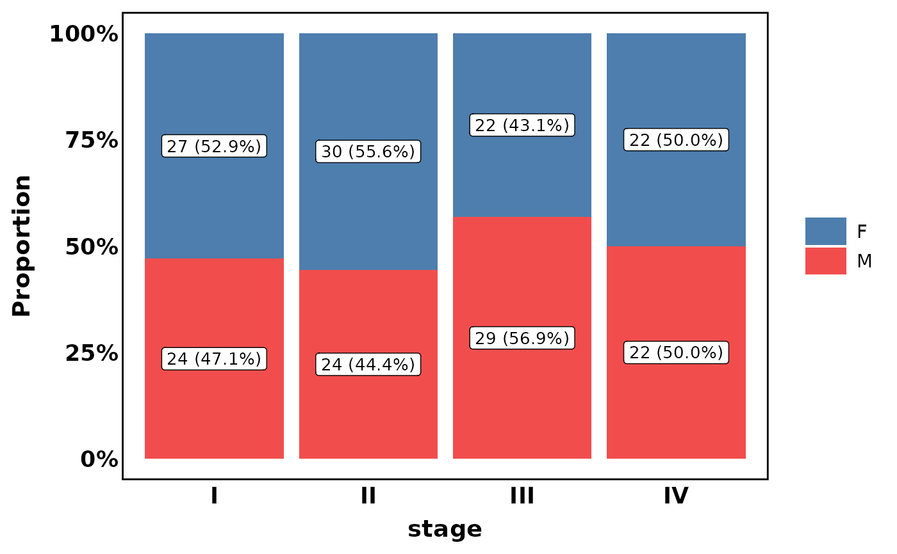
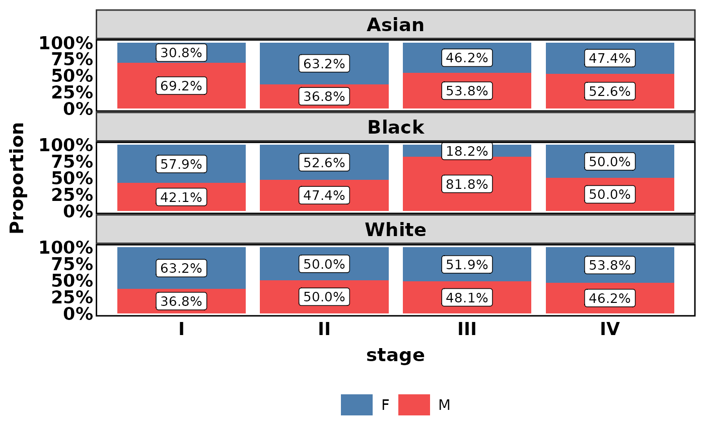
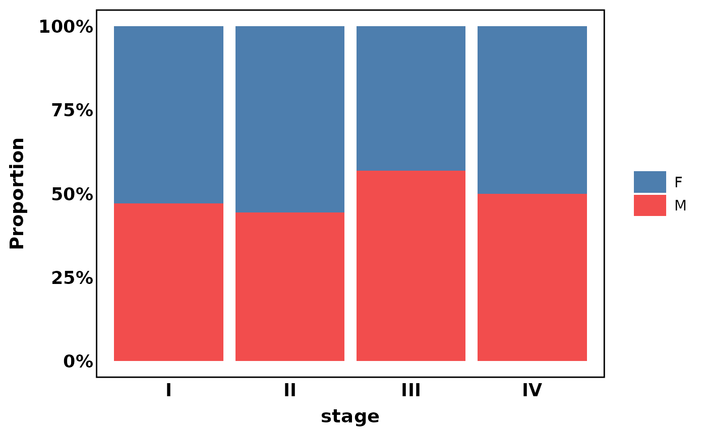
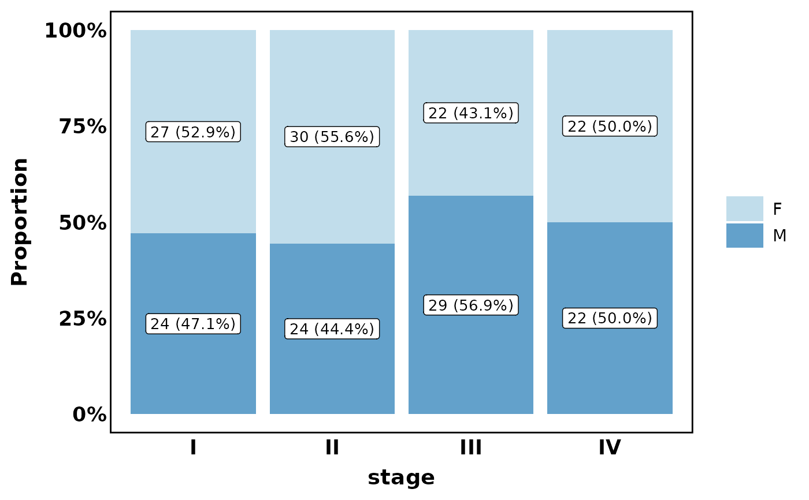
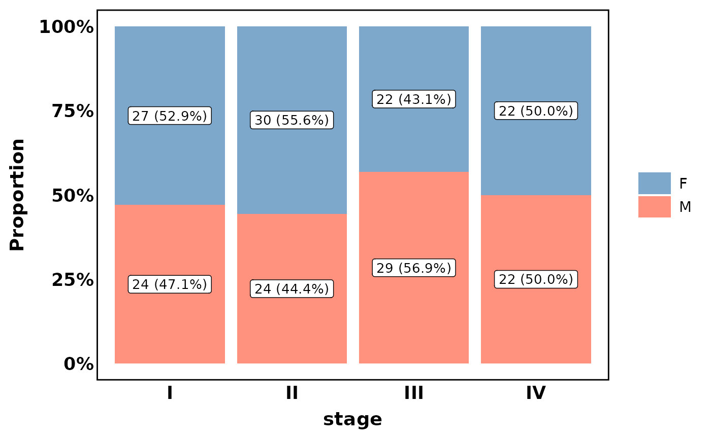
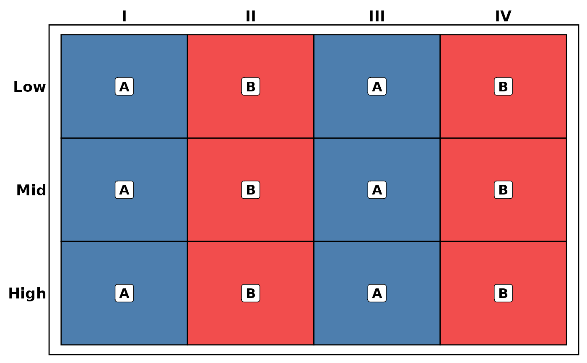
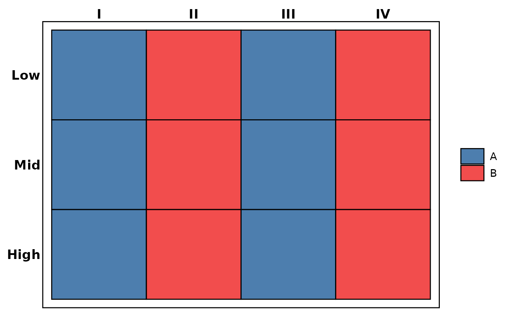

Visualise the cross-distribution of categorical variables. With 2 variables
the plot is an alluvial / Sankey flow (default) or a
stacked proportion bar, selected via type; with 3 variables
it is a tile heatmap. The alluvial mode uses
plt_alluvial(), so it supports native faceting and only
requires the suggested ggalluvial package.
Usage
plt_dist(
data,
dis_vars,
type = c("alluvial", "bar"),
facet = NULL,
color = NULL,
alpha = 0.7,
label_args = list(style = "count_percent", min_pct = 0, size = NULL, color = "black",
box = TRUE, fill = "white", alpha = 1, pct_accuracy = 0.1),
flow_args = list(curve_type = "linear"),
stratum_args = list(width = 0.5, color = "gray50", linewidth = 0.3, gap = 0.01),
facet_args = list(nrow = NULL, ncol = NULL, scales = "fixed"),
legend_args = list(position = NULL, ncol = 1),
theme_use = theme_heat(14),
save = list()
)Arguments
- data
A data frame. Existing dplyr grouping is ignored; counts use only the variables selected by
dis_varsandfacet. Rows missing any required value are removed with a message in every mode; unrelated columns do not affect inclusion. An error is raised if no complete rows remain. Alluvial mode also removes explicit NA factor levels and SPSS user-defined missing values. The heatmap ignoresfacet.- dis_vars
Character vector of 2 or 3 distinct, non-empty column names. Plain integer and double columns are treated as categories in numeric ascending order in every mode; values are not binned. Labelled columns (
haven_labelled, also asfacet) are converted withlabelled::to_factor(), so they show their value labels. Existing factors keep their level order. Character columns retain their existing ordering: first appearance for alluvial plots, sorted for bar charts and heatmaps.2 variables:
c(x, fill)\(\rightarrow\) alluvial flow (type = "alluvial", default) or stacked bar (type = "bar").3 variables:
c(x, y, fill)\(\rightarrow\) tile heatmap (typeignored). Each observed(x, y)cell must have only one fill category; otherwise an error prevents overplotting.
- type
Plot type for the 2-variable case:
"alluvial"(default) or"bar"(stacked proportion bar on a percentage axis, with the first fill category on top as in the legend and the alluvial plot). Ignored whendis_varshas 3 variables.- facet
Optional faceting variable name (string). Used by both 2-variable plot types and must differ from
dis_vars; ignored for the 3-variable heatmap. Plain integer and double facet values use numeric ascending order; existing factors keep their level order. Panel layout followsfacet_args.- color
Colour specification, resolved by the internal colour resolver:
NULL(defaultpal_lancet), a registered palette name (e.g."Paired"), a single literal colour, or a vector of colours. In a named vector, names must be unique category labels and include every observed fill category. Unnamed vectors follow factor-level order (data order for character alluvial groups). Unused bar/heatmap factor levels retain their positions in an unnamed palette.- alpha
One finite number between 0 and 1 giving the opacity of the bar segments and heatmap tiles, and of the flow ribbons in alluvial mode (where
plt_alluvial()calls itflow_args$alpha). Default 0.7.- label_args
A named list controlling the in-plot labels:
styleCharacter scalar selecting label content. Default
"count_percent". Bar chart:"count_percent"givescount (percent)on one line,"count_percent_wrap"puts the count above the percentage,"count"and"percent"give one of them, and"none"hides the labels. Alluvial plot:"count_percent"givesname (count, percent),"count_percent_wrap"puts the name abovecount (percent),"count"givesname (count),"percent"givesname percent, and"none"hides the labels. Heatmap: any value other than"none"prints the third variable's category in each tile;"none"hides the labels and shows the fill legend. Counts use a comma as thousands separator.min_pctNumeric scalar in \([0, 1]\). Bar segments and alluvial strata whose within-category proportion is below it are left unlabelled. Not used by the heatmap. Default
0.sizeNULLor a positive number giving the ggplot2 text size.NULL(default) scales with the base font size oftheme_use:(base_size - 4) / .pton bars,(base_size - 2) / .pton the heatmap and3 * base_size / 14in alluvial mode.colorCharacter scalar giving the label text colour. Default
"black".boxLogical scalar.
TRUE(default) draws boxed labels;FALSEdraws plain text.fillCharacter scalar giving the label box background; used only when
box = TRUE. Default"white".alphaNumeric scalar in \([0, 1]\) giving the label opacity. Default
1.pct_accuracyPositive number giving the rounding accuracy of percentages, as in
scales::percent():0.1(default) keeps one decimal place and1gives whole percentages. Not used by the heatmap.
- flow_args
A named list for the flow ribbons, used only in alluvial mode:
curve_typeCharacter scalar:
"linear"(default),"cubic","quintic","sine","arctangent","sigmoid"or"xspline".
The ribbon opacity is set by
alpha.- stratum_args
A named list for the strata, used only in alluvial mode:
widthNumber in \((0, 1]\) giving the stratum width relative to the spacing of the x positions. Default
0.5.colorCharacter scalar giving the stratum border colour. Default
"gray50".linewidthNon-negative number giving the stratum border width. Default
0.3.gapNon-negative number giving the transparent gap between strata as a fraction of the panel height; the gaps together must stay below 1. Default
0.01;0removes them.
- facet_args
A named list controlling
ggplot2::facet_wrap()whenfacetis set (bar and alluvial modes):nrowNULLor a positive integer giving the number of panel rows.NULL(default) puts up to three panels in a row on bar charts (unlessncolis set) and keepsfacet_wrap()'s layout in alluvial mode. Only facet values present in the data are counted.ncolNULLor a positive integer giving the number of panel columns. DefaultNULL.scales"fixed"(default),"free","free_x"or"free_y".
- legend_args
A named list controlling the fill legend:
positionNULLor one of"right","left","top","bottom","none".NULL(default) keeps the automatic placement: the bar chart uses the theme's position, or"right"when the theme hides the legend (as the defaulttheme_heat()does); the heatmap hides the legend when its tiles are labelled and otherwise places it like the bar chart; the alluvial plot uses"right".ncolPositive integer giving the number of legend columns. Default
1.
- theme_use
Theme specification, resolved by the internal theme resolver. Default
theme_heat(14)(clean look). Also accepts aggplot2::themeobject, a theme function, a function-name string (e.g."theme_my"), orNULL(\(\rightarrow\)theme_km()). Unlesslabel_args$sizeis set, label sizes follow the theme's base font size, e.g.theme_use = theme_my(base_size = 16). In alluvial mode only the base font size is taken fromtheme_use;theme_alluvia()supplies the remaining theme settings.- save
NULL, an empty list (default), or a named list forwarded toRegR::save_plt()for PDF output:filenameand optionallywidthandheight. Awidthorheightleft out defaults to the page the plot is laid out for – for the alluvial plot seeplt_alluvial(); 0.9 in per x level (at least 3 in) by 4 in per facet for the bar chart, and 1.1 in per column by 0.6 in per row of cells for the heatmap, beside the measured axis text and legend – which every call prints with the matchingsaveline. Saving, and the size note, need the RegR package.
Details
The list arguments (label_args, flow_args,
stratum_args, facet_args, legend_args) follow
plt_alluvial(): a partial list is merged with the defaults
shown in the usage, and unknown or duplicated fields are rejected.
See also
Other plot:
PlotButterfly(),
PlotButterfly2(),
PlotRankCor(),
plt_cat(),
plt_con(),
plt_sankey(),
plt_upset()
Examples
set.seed(1)
df <- data.frame(
stage = factor(sample(c("I","II","III","IV"), 200, TRUE)),
sex = factor(sample(c("M","F"), 200, TRUE)),
race = factor(sample(c("White","Black","Asian"), 200, TRUE)),
grade = factor(sample(c("Low","Mid","High"), 200, TRUE))
)
# --- Stacked bar (type = "bar") -------------------------------------------
# "count (percent)" labels on one line
plt_dist(df, dis_vars = c("stage", "sex"), type = "bar")

# Count above percent, whole percentages, segments below 10% unlabelled
plt_dist(df, dis_vars = c("stage", "sex"), type = "bar",
label_args = list(style = "count_percent_wrap", pct_accuracy = 1,
min_pct = 0.1))
# Percent-only labels, facets in one column, legend below
plt_dist(df, dis_vars = c("stage", "sex"), type = "bar", facet = "race",
label_args = list(style = "percent"),
facet_args = list(ncol = 1),
legend_args = list(position = "bottom", ncol = 2))

# No labels
plt_dist(df, dis_vars = c("stage", "sex"), type = "bar",
label_args = list(style = "none"))

# Registered palette name / literal colour vector
plt_dist(df, dis_vars = c("stage", "sex"), type = "bar", color = "Paired")

plt_dist(df, dis_vars = c("stage", "sex"), type = "bar",
color = c("steelblue", "tomato"))

# Theme + label size carried by theme_use
plt_dist(df, dis_vars = c("stage", "sex"), type = "bar",
theme_use = theme_my(base_size = 16))

# --- Tile heatmap (3 variables; type ignored) -----------------------------
heat_data <- expand.grid(stage = c("I", "II", "III", "IV"),
grade = c("Low", "Mid", "High"))
heat_data$category <- factor(rep(c("A", "B"), 6))
plt_dist(heat_data, dis_vars = c("stage", "grade", "category"))
 plt_dist(heat_data, dis_vars = c("stage", "grade", "category"),
label_args = list(style = "none"))
plt_dist(heat_data, dis_vars = c("stage", "grade", "category"),
label_args = list(style = "none"))
 # --- Alluvial flow (default; needs ggalluvial) ----------------------------
if (requireNamespace("ggalluvial", quietly = TRUE)) {
plt_dist(df, dis_vars = c("stage", "sex"))
plt_dist(df, dis_vars = c("stage", "sex"), facet = "race")
plt_dist(df, dis_vars = c("stage", "sex"),
label_args = list(style = "count_percent_wrap"))
plt_dist(df, dis_vars = c("stage", "sex"),
flow_args = list(curve_type = "sigmoid"),
stratum_args = list(width = 0.4, gap = 0.02))
}
# --- Alluvial flow (default; needs ggalluvial) ----------------------------
if (requireNamespace("ggalluvial", quietly = TRUE)) {
plt_dist(df, dis_vars = c("stage", "sex"))
plt_dist(df, dis_vars = c("stage", "sex"), facet = "race")
plt_dist(df, dis_vars = c("stage", "sex"),
label_args = list(style = "count_percent_wrap"))
plt_dist(df, dis_vars = c("stage", "sex"),
flow_args = list(curve_type = "sigmoid"),
stratum_args = list(width = 0.4, gap = 0.02))
}
